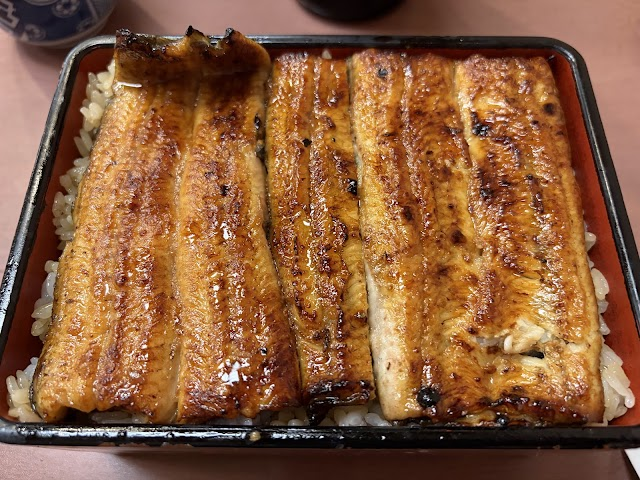
| 営業時間 | 水・木・金・土・日 11:30〜13:40, 17:00〜19:10 |
|---|---|
| 定休日 | 月・火曜 |
| 住所 | 埼玉県さいたま市浦和区仲町１丁目１０−８ |
| 予約 | 可 — ☎ 048-822-7116 ／ 公式サイト |
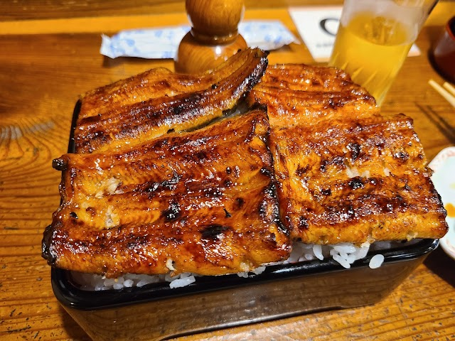
| 営業時間 | 月・火・水・木・金 11:00〜14:30, 17:00〜19:50 ／ 土 11:00〜14:00, 17:30〜19:30 |
|---|---|
| 定休日 | 日曜 |
| 住所 | 埼玉県さいたま市浦和区高砂３丁目２−１２ |
| 予約 | 可 — ☎ 048-822-2585 ／ 公式サイト |
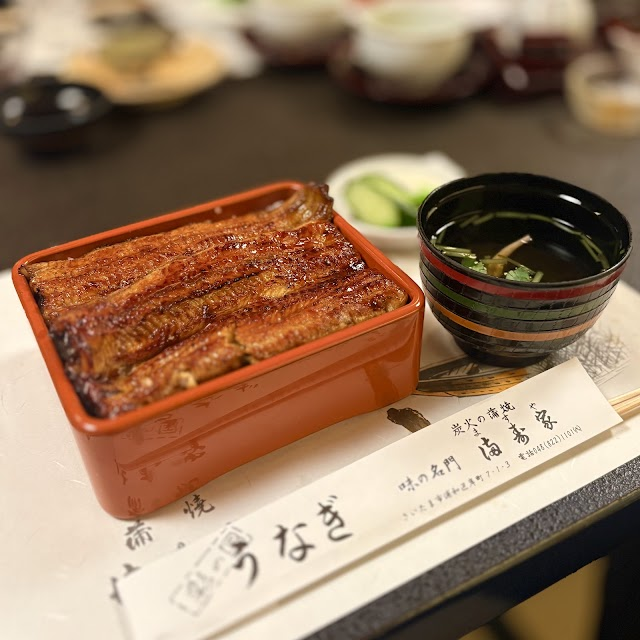
| 営業時間 | 火・水・木・金・土 11:00〜15:00, 17:00〜21:00 ／ 日 11:00〜15:00, 17:00〜20:00 |
|---|---|
| 定休日 | 月曜 |
| 住所 | 埼玉県さいたま市浦和区岸町７丁目１−３ |
| 予約 | 可 — ☎ 050-5486-5926 ／ 公式サイト |
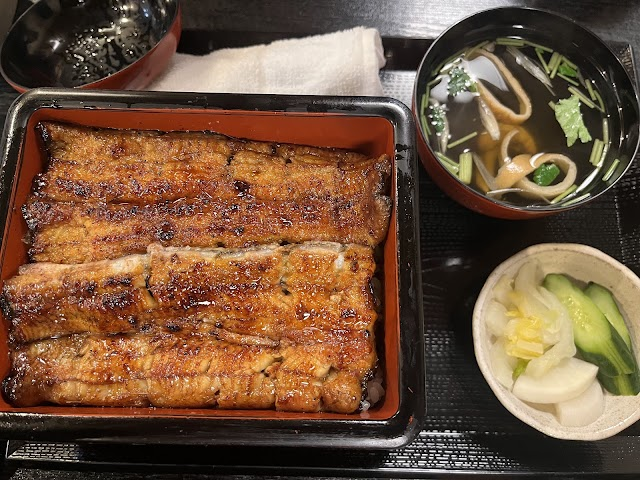
| 営業時間 | 火・水・木・金・土・日 11:00〜13:00 |
|---|---|
| 定休日 | 月曜 |
| 住所 | 埼玉県さいたま市浦和区東高砂町８−３ |
| 予約 | 可 — ☎ 048-883-6344 ／ 公式サイト |
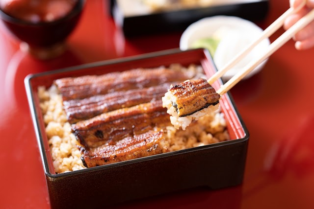
| 営業時間 | 月・火・水・金・土・日 11:00〜22:00 |
|---|---|
| 定休日 | 木曜 |
| 住所 | 埼玉県さいたま市南区鹿手袋１丁目２−２６ |
| 予約 | 可 — ☎ 048-862-5648 ／ 公式サイト |
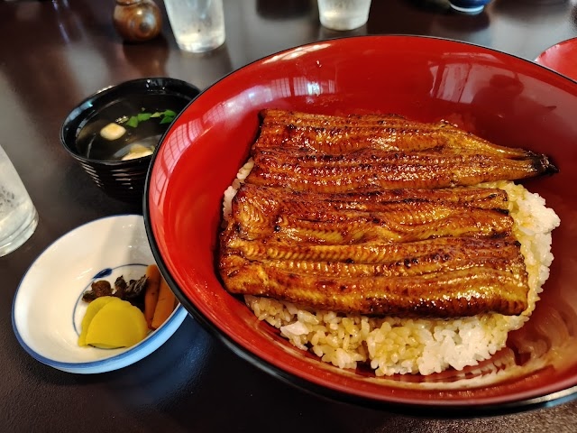
| 営業時間 | 火・水・木・金・土・日 11:00〜15:00, 17:00〜20:00 |
|---|---|
| 定休日 | 月曜 |
| 住所 | 埼玉県さいたま市南区太田窪２１６６ |
| 予約 | 要確認 — ☎ 048-882-1382 ／ 公式サイト |
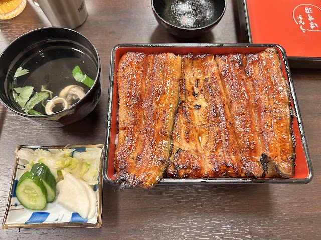
| 営業時間 | 火・水・木・金・土・日 11:30〜14:00, 17:00〜20:00 |
|---|---|
| 定休日 | 月曜 |
| 住所 | 埼玉県さいたま市緑区東浦和６丁目９−３ 東浦和グルメ館 |
| 予約 | 可 — ☎ 048-876-5500 ／ 公式サイト |
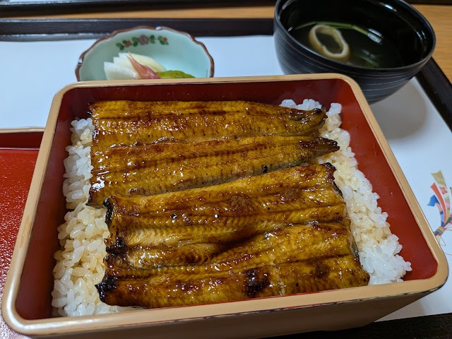
| 営業時間 | 火・水・木・金・土・日 11:30〜20:30 |
|---|---|
| 定休日 | 月曜 |
| 住所 | 埼玉県さいたま市岩槻区大戸１７１９ |
| 予約 | 可 — ☎ 048-799-1023 ／ 公式サイト |
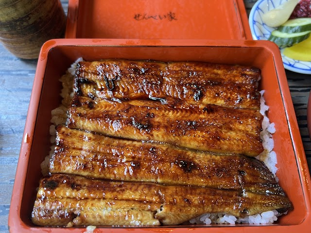
| 営業時間 | 月・水・木・金・土・日 11:00〜21:00 |
|---|---|
| 定休日 | 火曜 |
| 住所 | 埼玉県さいたま市岩槻区本町２丁目２−３１ |
| 予約 | 可 — ☎ 048-756-0076 |
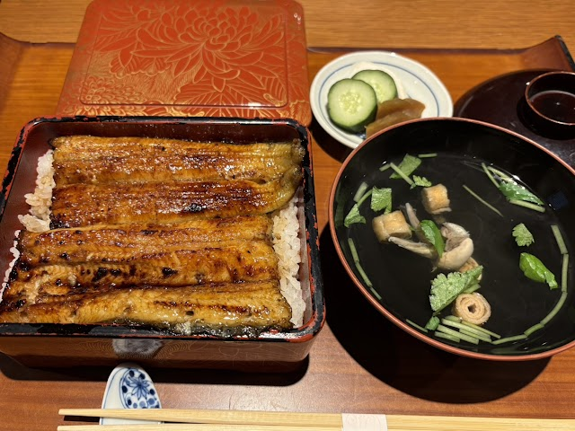
| 営業時間 | 月・水・木・金・土・日 11:30〜14:30, 17:00〜20:30 |
|---|---|
| 定休日 | 火曜 |
| 住所 | 埼玉県さいたま市岩槻区本町４丁目１−８ |
| 予約 | 可 — ☎ 050-5484-5706 ／ 公式サイト |
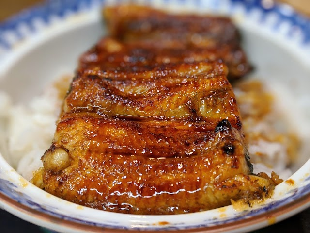
| 営業時間 | 月・木・金・土・日 11:00〜14:40, 17:00〜20:30 ／ 火 11:00〜14:30, 17:00〜20:30 |
|---|---|
| 定休日 | 水曜 |
| 住所 | 埼玉県さいたま市大宮区大門町１丁目２４ |
| 予約 | 可 — ☎ 048-641-0158 ／ 公式サイト |
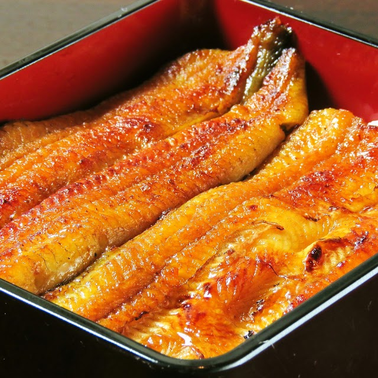
| 営業時間 | 月・火・水・木・金・土・日 11:30〜14:00 |
|---|---|
| 定休日 | なし(要最終確認) |
| 住所 | 埼玉県さいたま市大宮区仲町１丁目５３ 1F |
| 予約 | 可 — ☎ 048-662-9552 ／ 公式サイト |
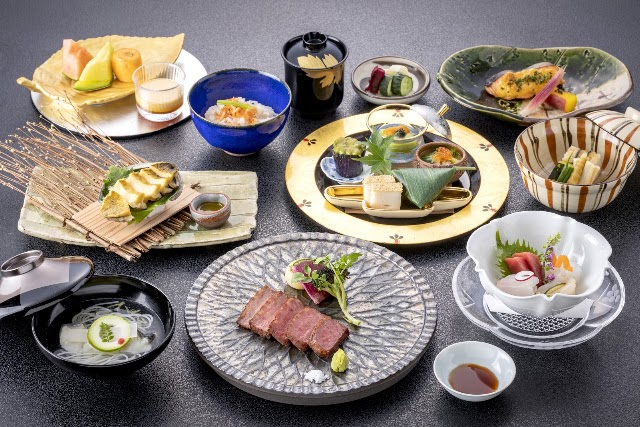
| 営業時間 | 火・水・木・金 11:30〜15:00, 17:00〜22:00 ／ 土 11:30〜21:00 ／ 日 11:30〜17:00 |
|---|---|
| 定休日 | 月曜 |
| 住所 | 埼玉県さいたま市大宮区高鼻町２丁目２７６ |
| 予約 | 可 — ☎ 048-644-0165 ／ 公式サイト |
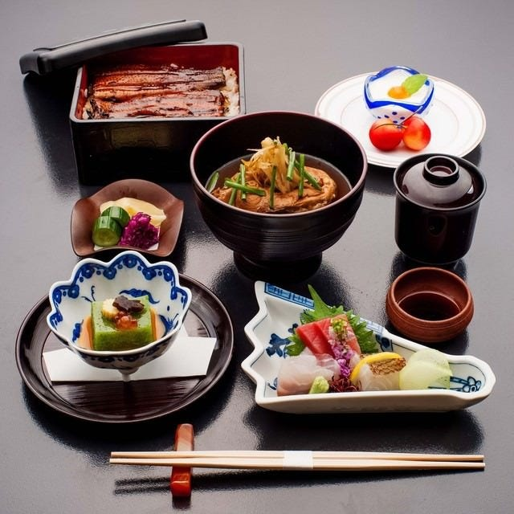
| 営業時間 | 月・火・水・木・金・土・日 11:30〜15:30, 17:00〜22:00 |
|---|---|
| 定休日 | なし(要最終確認) |
| 住所 | 埼玉県さいたま市大宮区高鼻町１丁目３７−１ |
| 予約 | 可 — ☎ 050-5485-2706 ／ 公式サイト |
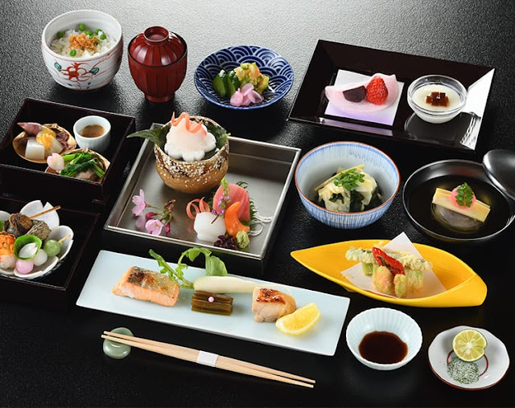
| 営業時間 | 月・木・金 11:30〜15:00, 17:00〜22:00 ／ 土・日 11:30〜15:30, 17:30〜22:00 |
|---|---|
| 定休日 | 火・水曜 |
| 住所 | 埼玉県さいたま市大宮区堀の内町３丁目１１０ |
| 予約 | 可 — ☎ 048-641-0501 ／ 公式サイト |
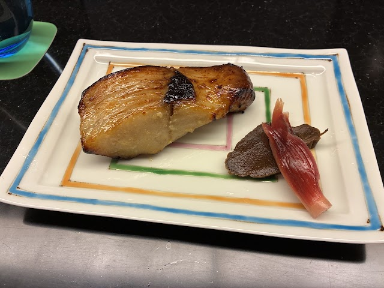
| 営業時間 | 月・火・水・木・金・土・日 11:30〜23:00 |
|---|---|
| 定休日 | なし(要最終確認) |
| 住所 | 埼玉県さいたま市大宮区桜木町２丁目１８１ |
| 予約 | 可 — ☎ 048-647-0860 |
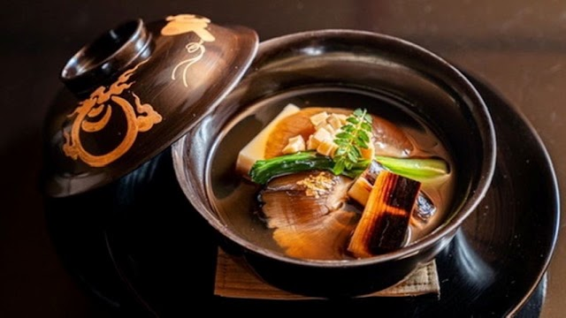
| 営業時間 | 月・火・木・金・土・日 11:30〜15:00, 17:30〜22:00 ／ 水 11:30〜15:00, 17:00〜22:00 |
|---|---|
| 定休日 | なし(要最終確認) |
| 住所 | 埼玉県さいたま市浦和区常盤３丁目２４−７ |
| 予約 | 可 — ☎ 048-886-8027 ／ 公式サイト |
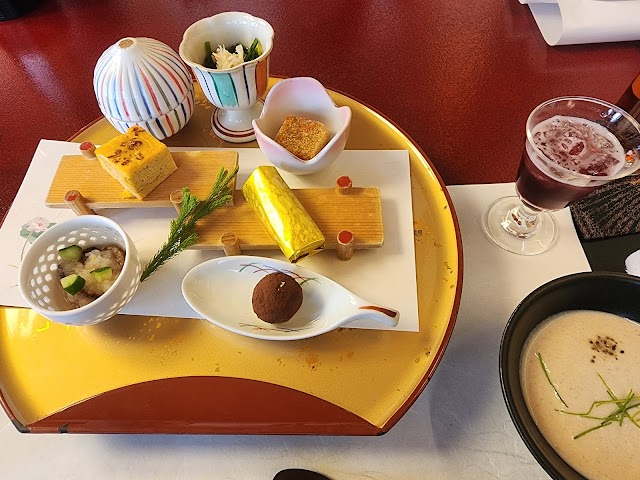
| 営業時間 | 月・火・水・木・金・土・日 11:30〜15:00, 17:00〜22:00 |
|---|---|
| 定休日 | なし(要最終確認) |
| 住所 | 埼玉県さいたま市浦和区高砂１丁目１４−２ |
| 予約 | 可 — ☎ 048-823-8001 ／ 公式サイト |
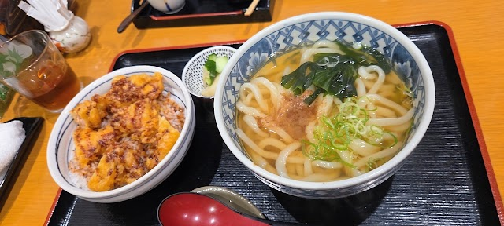
| 営業時間 | 月・火・木・金・土・日 11:30〜14:00, 17:00〜22:00 |
|---|---|
| 定休日 | 水曜 |
| 住所 | 埼玉県さいたま市中央区本町西１丁目３−２４ ユニコスクエア 1F |
| 予約 | 可 — ☎ 048-858-5675 ／ 公式サイト |
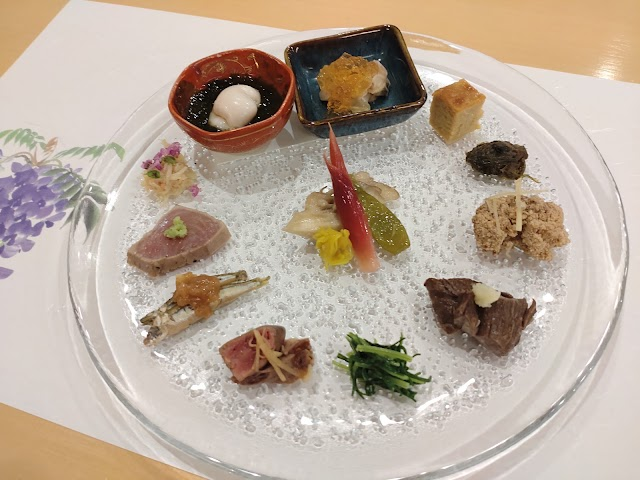
| 営業時間 | 火・水 17:30〜23:00 ／ 木・金・土 11:30〜14:00, 17:30〜23:00 ／ 日 11:30〜14:00, 17:00〜22:00 |
|---|---|
| 定休日 | 月曜 |
| 住所 | 埼玉県さいたま市中央区下落合３丁目１−２０ |
| 予約 | 可 — ☎ 048-767-6430 ／ 公式サイト |
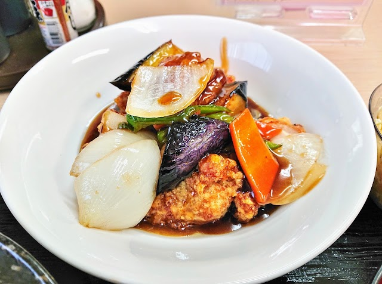
| 営業時間 | 月・火・水・木・金・土 11:15〜15:00, 17:00〜20:30 |
|---|---|
| 定休日 | 日曜 |
| 住所 | 埼玉県さいたま市岩槻区仲町１丁目３−２４ |
| 予約 | 要確認 — ☎ 048-756-4639 |
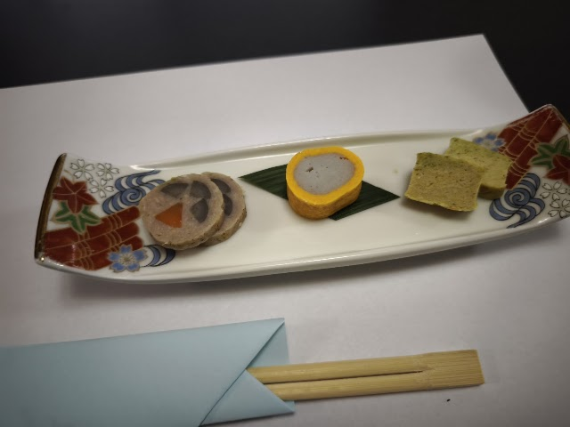
| 営業時間 | 月・火・水・木・金・土 11:00〜20:00 |
|---|---|
| 定休日 | 日曜 |
| 住所 | 埼玉県さいたま市見沼区大和田町１丁目５７６−４ |
| 予約 | 可 — ☎ 048-683-4618 |
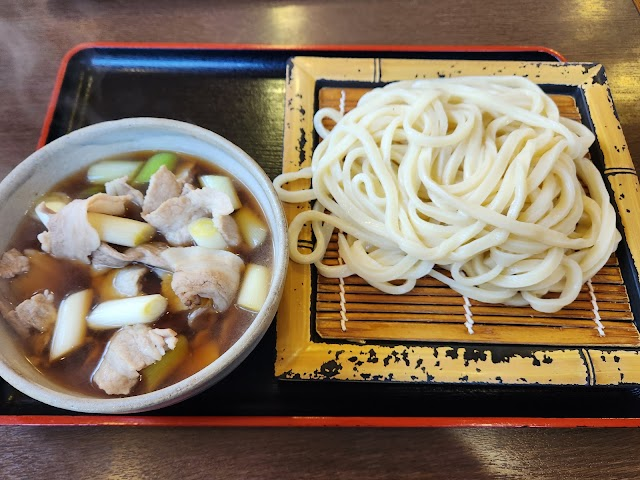
| 営業時間 | 月・火・水・木・金 10:00〜15:00 |
|---|---|
| 定休日 | 土・日曜 |
| 住所 | 埼玉県さいたま市西区三橋６丁目１４−７ |
| 予約 | 要確認 — ☎ 048-624-2509 |
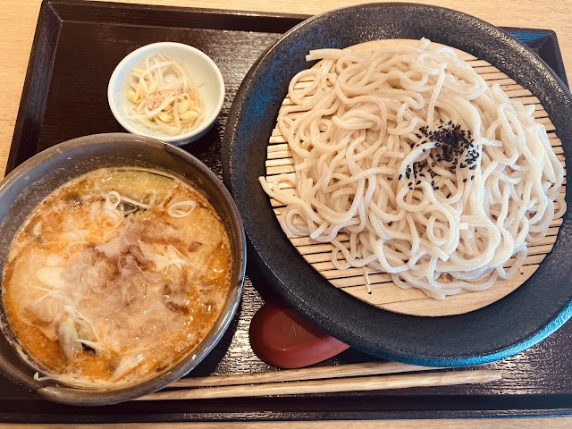
| 営業時間 | 月 17:00〜22:00 ／ 火・水・木・金・土 11:30〜13:30, 17:00〜22:00 |
|---|---|
| 定休日 | 日曜 |
| 住所 | 埼玉県さいたま市桜区南元宿１丁目１４−１９ 1F |
| 予約 | 可 — ☎ 048-816-5355 ／ 公式サイト |
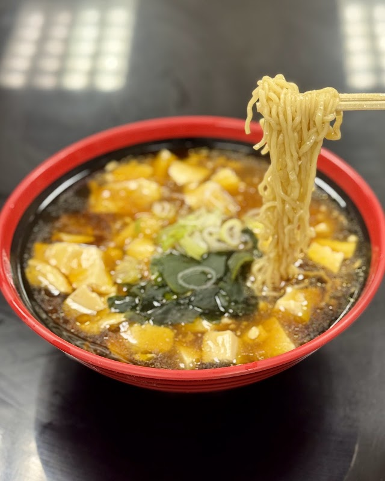
| 営業時間 | 火・水・木・金・土・日 11:00〜14:00 |
|---|---|
| 定休日 | 月曜 |
| 住所 | 埼玉県さいたま市岩槻区太田３丁目１−１ 1階 |
| 予約 | 要確認 — ☎ 048-758-1122 ／ 公式サイト |
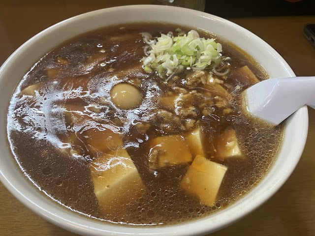
| 営業時間 | 月・火・水・金・土・日 11:30〜15:00 |
|---|---|
| 定休日 | 木曜 |
| 住所 | 埼玉県さいたま市桜区田島１丁目２１−１８ |
| 予約 | 要確認 — ☎ 048-839-1559 ／ 公式サイト |
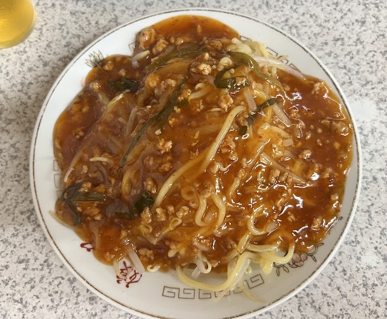
| 営業時間 | 水・木・金・土 11:30〜14:30, 17:30〜19:30 ／ 日 11:30〜15:00 |
|---|---|
| 定休日 | 月・火曜 |
| 住所 | 埼玉県さいたま市浦和区北浦和１丁目２−１３ |
| 予約 | 要確認 — ☎ 048-824-6791 ／ 公式サイト |
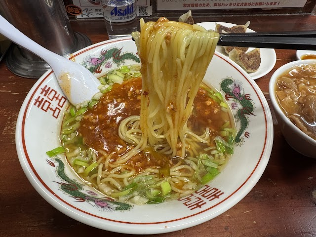
| 営業時間 | 火・水・木・金・土 11:30〜14:00, 18:00〜22:00 ／ 日 11:30〜15:00 |
|---|---|
| 定休日 | 月曜 |
| 住所 | 埼玉県さいたま市西区西遊馬３４３ |
| 予約 | 要確認 — ☎ 048-622-4512 ／ 公式サイト |
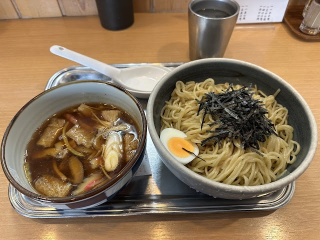
| 営業時間 | 月・火・水・木・金・土・日 11:00〜21:00 |
|---|---|
| 定休日 | なし(要最終確認) |
| 住所 | 埼玉県さいたま市大宮区大門町２丁目１１７ |
| 予約 | 要確認 — ☎ 048-641-3200 ／ 公式サイト |
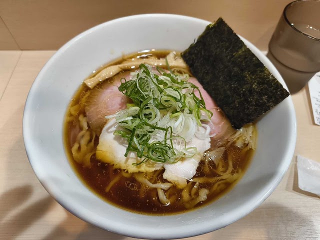
| 営業時間 | 火・水・木・金・土 11:00〜15:00, 18:00〜20:30 ／ 日 11:00〜15:00 |
|---|---|
| 定休日 | 月曜 |
| 住所 | 埼玉県さいたま市大宮区下町１丁目30−３ |
| 予約 | 要確認 — ☎ 048-633-7544 |
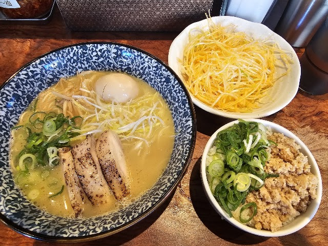
| 営業時間 | 月・火・水・木・金・土・日 11:00〜14:45, 18:00〜0:45 |
|---|---|
| 定休日 | なし(要最終確認) |
| 住所 | 埼玉県さいたま市浦和区東高砂町６−１ |
| 予約 | 要確認 — ☎ 048-762-3221 ／ 公式サイト |
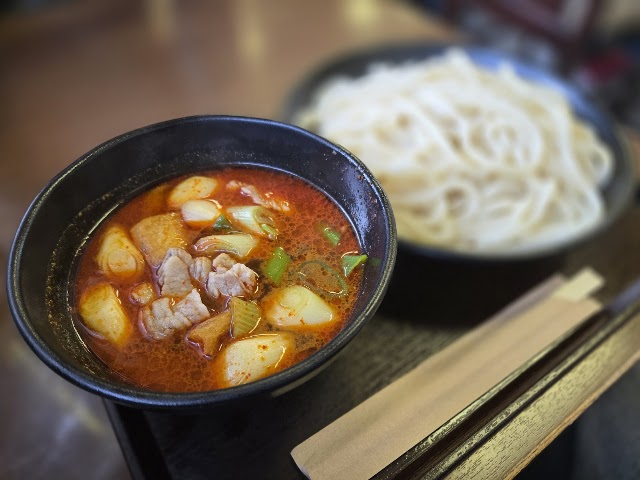
| 営業時間 | 月・火・水・木・金・土 11:00〜14:30 |
|---|---|
| 定休日 | 日曜 |
| 住所 | 埼玉県さいたま市中央区上落合３丁目１２−３６ ニューシティマンション 1F |
| 予約 | 要確認 — ☎ 048-852-7500 ／ 公式サイト |
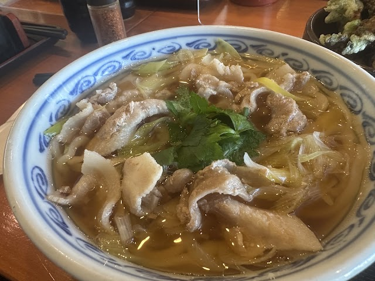
| 営業時間 | 月・火・水・木・金 11:00〜14:30 ／ 土・日 11:00〜15:00 |
|---|---|
| 定休日 | なし(要最終確認) |
| 住所 | 埼玉県さいたま市岩槻区南平野３丁目２５−２８ |
| 予約 | 要確認 — ☎ 048-758-8633 |
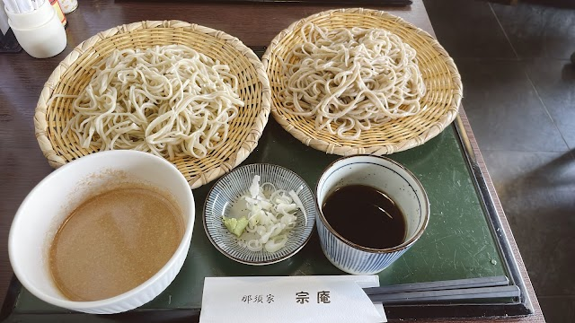
| 営業時間 | 月・水・木・金 11:30〜15:00, 17:30〜22:00 ／ 土・日 11:30〜22:00 |
|---|---|
| 定休日 | 火曜 |
| 住所 | 埼玉県さいたま市南区関２丁目７−１８ |
| 予約 | 可 — ☎ 048-762-3806 ／ 公式サイト |
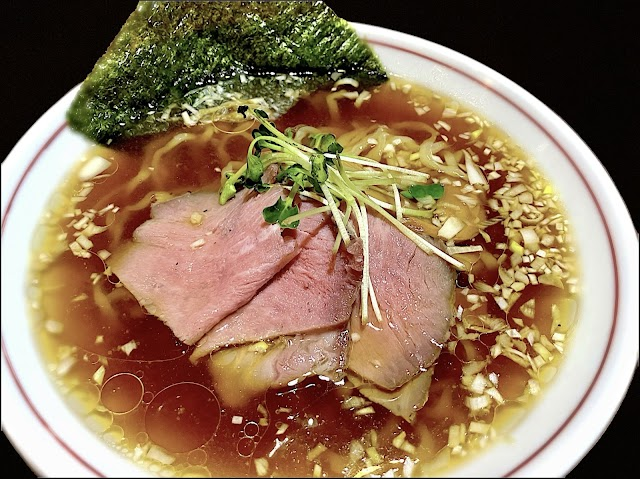
| 営業時間 | 月・火・水・木 11:00〜15:00, 17:00〜22:30 ／ 金・土 11:00〜15:00, 17:00〜23:00 ／ 日 11:00〜15:00, 17:00〜20:00 |
|---|---|
| 定休日 | なし(要最終確認) |
| 住所 | 埼玉県さいたま市中央区本町東２丁目１７−２ |
| 予約 | 要確認 — ☎ 048-626-6988 ／ 公式サイト |
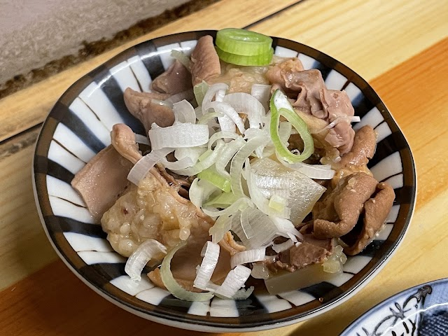
| 営業時間 | 月・火・水・木・金・土・日 10:00〜22:15 |
|---|---|
| 定休日 | なし(要最終確認) |
| 住所 | 埼玉県さいたま市大宮区大門町１丁目４３−４３ いづみやビル ２Ｆ |
| 予約 | 要確認 — ☎ 048-641-0211 |
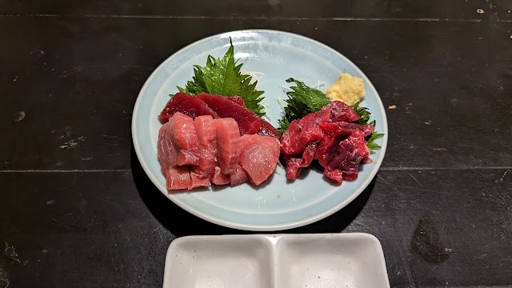
| 営業時間 | 月・火・水・木・金・土 17:00〜0:00 |
|---|---|
| 定休日 | 日曜 |
| 住所 | 埼玉県さいたま市大宮区大門町１丁目４３ |
| 予約 | 可 — ☎ 048-641-0919 ／ 公式サイト |
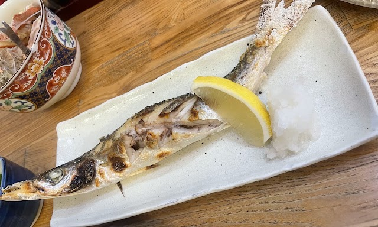
| 営業時間 | 月・火・水・木・金 16:00〜22:30 ／ 土・日 14:00〜22:30 |
|---|---|
| 定休日 | なし(要最終確認) |
| 住所 | 埼玉県さいたま市大宮区仲町１丁目５０ |
| 予約 | 可 — ☎ 048-647-2525 |
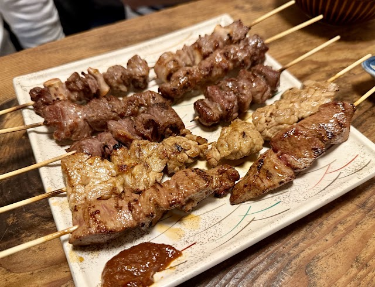
| 営業時間 | 月・火・水・木 16:00〜22:00 ／ 金 16:00〜23:00 ／ 土 11:00〜23:00 |
|---|---|
| 定休日 | 日曜 |
| 住所 | 埼玉県さいたま市大宮区仲町１丁目７−１ |
| 予約 | 可 — ☎ 048-641-1157 ／ 公式サイト |
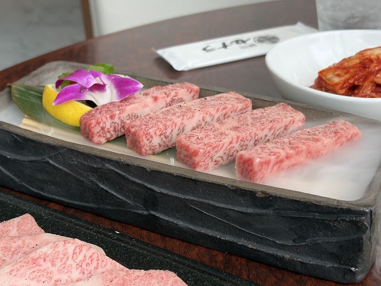
| 営業時間 | 月・火・水・木 11:30〜15:00, 17:00〜22:00 ／ 金 11:30〜15:00, 17:00〜22:30 ／ 土・日 11:30〜22:30 |
|---|---|
| 定休日 | なし(要最終確認) |
| 住所 | 埼玉県さいたま市大宮区北袋町２丁目４４０ |
| 予約 | 可 — ☎ 048-647-1129 ／ 公式サイト |
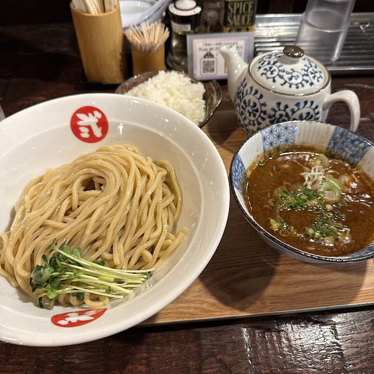
| 営業時間 | 月・火・水・木・金 11:30〜13:45, 17:00〜0:00 ／ 土 17:00〜0:00 |
|---|---|
| 定休日 | 日曜 |
| 住所 | 埼玉県さいたま市浦和区仲町２丁目１７−５ |
| 予約 | 可 — ☎ 048-699-5000 ／ 公式サイト |
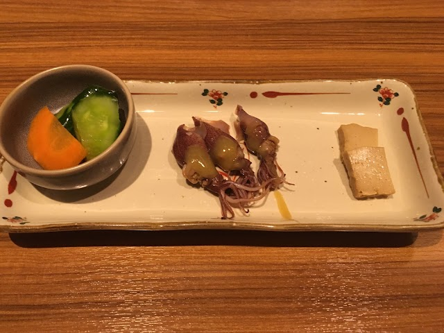
| 営業時間 | 月・水・木・金・土・日 17:00〜23:00 |
|---|---|
| 定休日 | 火曜 |
| 住所 | 埼玉県さいたま市浦和区東高砂町３−５ |
| 予約 | 可 — ☎ 048-882-3721 ／ 公式サイト |
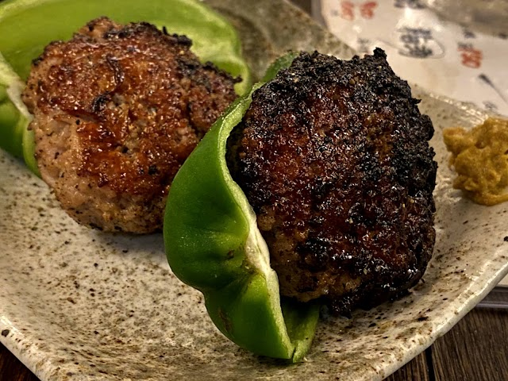
| 営業時間 | 月・火・水・木・金・土・日 17:00〜1:00 |
|---|---|
| 定休日 | なし(要最終確認) |
| 住所 | 埼玉県さいたま市浦和区仲町１丁目８−６ |
| 予約 | 要確認 — ☎ 048-799-2368 ／ 公式サイト |
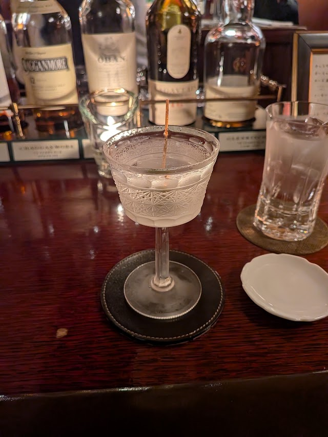
| 営業時間 | 火・水・木・金・土 17:00〜0:00 ／ 日 16:00〜22:00 |
|---|---|
| 定休日 | 月曜 |
| 住所 | 埼玉県さいたま市浦和区仲町１丁目１０−１５ |
| 予約 | 可 — ☎ 048-833-0234 |
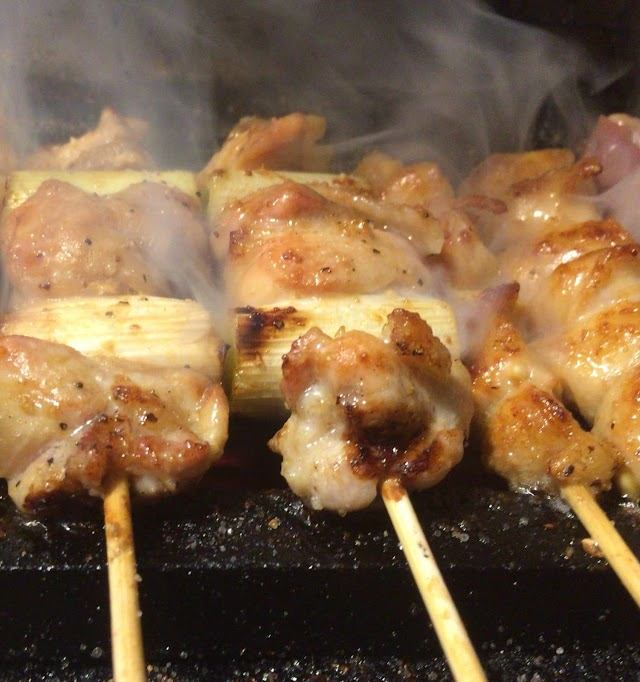
| 営業時間 | 月・火・水・木・金・土 17:00〜23:00 |
|---|---|
| 定休日 | 日曜 |
| 住所 | 埼玉県さいたま市中央区上落合２丁目３−１ |
| 予約 | 可 — ☎ 048-826-5432 ／ 公式サイト |
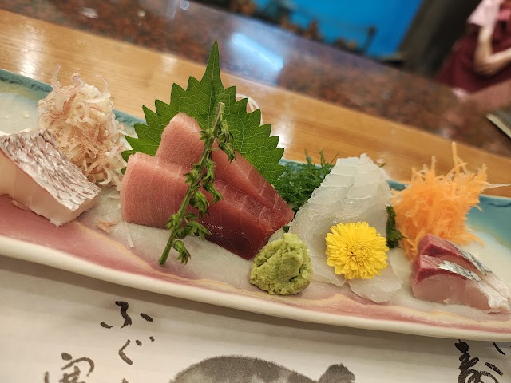
| 営業時間 | 火・水・木・金・土・日 17:00〜21:30 |
|---|---|
| 定休日 | 月曜 |
| 住所 | 埼玉県さいたま市岩槻区本町３丁目３−１２ |
| 予約 | 可 — ☎ 050-5462-1205 ／ 公式サイト |
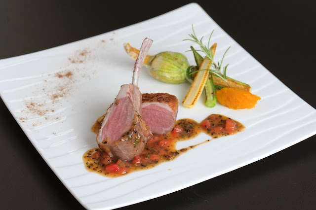
| 営業時間 | 月 11:00〜21:30 ／ 水・木・金・土・日 11:30〜14:30, 18:00〜21:30 |
|---|---|
| 定休日 | 火曜 |
| 住所 | 埼玉県さいたま市大宮区北袋町１丁目１３０−１ |
| 予約 | 可 — ☎ 048-641-9489 ／ 公式サイト |
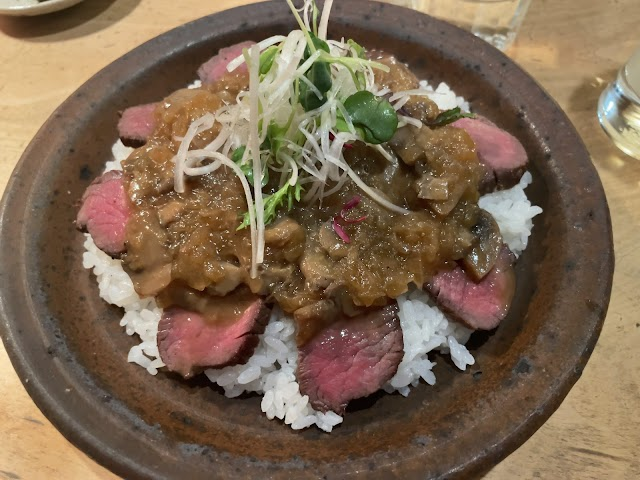
| 営業時間 | 月・木・金 11:30〜14:30 ／ 土・日 11:00〜14:00, 17:30〜20:00 |
|---|---|
| 定休日 | 火・水曜 |
| 住所 | 埼玉県さいたま市大宮区北袋町１丁目１４７ |
| 予約 | 可 — ☎ 048-644-9961 ／ 公式サイト |
| 営業時間 | 火・水・木・金・土・日 11:00〜15:00, 17:00〜22:30 |
|---|---|
| 定休日 | 月曜 |
| 住所 | 埼玉県さいたま市大宮区桜木町２丁目１５９−２ |
| 予約 | 可 — ☎ 048-643-8385 ／ 公式サイト |
| 営業時間 | 水・木・金・土・日 18:00〜21:00 |
|---|---|
| 定休日 | 月・火曜 |
| 住所 | 埼玉県さいたま市大宮区宮町１丁目９５ |
| 予約 | 可 — ☎ 048-871-5281 ／ 公式サイト |
| 営業時間 | 月・火・水・木・金・土・日 11:15〜22:00 |
|---|---|
| 定休日 | なし(要最終確認) |
| 住所 | 埼玉県さいたま市大宮区桜木町２丁目１８９−２ |
| 予約 | 可 — ☎ 048-612-5082 ／ 公式サイト |
| 営業時間 | 水・木・金・土・日 11:00〜15:00, 18:00〜22:00 |
|---|---|
| 定休日 | 月・火曜 |
| 住所 | 埼玉県さいたま市浦和区仲町１丁目５−１５ |
| 予約 | 可 — ☎ 048-824-1511 ／ 公式サイト |
| 営業時間 | 月・火・水・木・金・土・日 11:00〜15:00, 17:00〜22:00 |
|---|---|
| 定休日 | なし(要最終確認) |
| 住所 | 埼玉県さいたま市浦和区高砂１丁目１５−１ 伊勢丹浦和店 ７F |
| 予約 | 可 — ☎ 048-831-5555 ／ 公式サイト |
| 営業時間 | 月 11:30〜15:00 ／ 水・木・金・土・日 11:30〜15:00, 18:00〜21:30 |
|---|---|
| 定休日 | 火曜 |
| 住所 | 埼玉県さいたま市浦和区仲町１丁目１１−１２ さくらビル浦和I 2階 |
| 予約 | 可 — ☎ 048-753-9272 ／ 公式サイト |
| 営業時間 | 火・水・木・日 11:30〜15:00, 17:30〜21:30 ／ 金・土 11:30〜15:00, 17:30〜22:00 |
|---|---|
| 定休日 | 月曜 |
| 住所 | 埼玉県さいたま市南区別所２丁目６−１９−１０１ |
| 予約 | 可 — ☎ 048-749-1411 ／ 公式サイト |
| 営業時間 | 月・水・木・金・土 11:00〜14:30, 17:30〜21:00 ／ 日 11:00〜14:30, 15:30〜21:00 |
|---|---|
| 定休日 | 火曜 |
| 住所 | 埼玉県さいたま市岩槻区南平野４丁目１−１ |
| 予約 | 可 — ☎ 048-747-6388 ／ 公式サイト |
| 営業時間 | 月・火・水・金・土・日 11:00〜15:30, 17:00〜22:00 |
|---|---|
| 定休日 | 木曜 |
| 住所 | 埼玉県さいたま市岩槻区加倉３丁目９−１０ |
| 予約 | 可 — ☎ 048-756-6695 ／ 公式サイト |
| 営業時間 | 火・水・木・金・土・日 11:30〜14:00, 18:00〜22:00 |
|---|---|
| 定休日 | 月曜 |
| 住所 | 埼玉県さいたま市中央区上落合２丁目１２−４ エスニックハイツ 103 |
| 予約 | 可 — ☎ 048-767-8417 |
| 営業時間 | 月・火・水・木・金・土・日 24 :間営業 |
|---|---|
| 定休日 | なし(要最終確認) |
| 住所 | 埼玉県さいたま市大宮区宮町１丁目４６−４６ 大宮蓮見ビル |
| 予約 | 要確認 — ☎ 048-644-3998 |
| 営業時間 | 月・水・木・金・土・日 10:00〜17:30 |
|---|---|
| 定休日 | 火曜 |
| 住所 | 埼玉県さいたま市大宮区大門町２丁目９４−９４ |
| 予約 | 要確認 — ☎ 048-641-1295 |
| 営業時間 | 月・火・木・金・土 11:00〜20:30 ／ 日 11:00〜19:00 |
|---|---|
| 定休日 | 水曜 |
| 住所 | 埼玉県さいたま市大宮区仲町２丁目24−８ 2F COTTON CANDY OMIYA NAKACHO |
| 予約 | 要確認 — ☎ 048-856-9925 ／ 公式サイト |
| 営業時間 | 火・水・木・金・土・日 9:30〜18:00 |
|---|---|
| 定休日 | 月曜 |
| 住所 | 埼玉県さいたま市大宮区高鼻町２丁目１２ |
| 予約 | 要確認 — ☎ 048-644-3782 ／ 公式サイト |
| 営業時間 | 月・水・木・金 9:30〜19:00 ／ 土 10:00〜18:00 |
|---|---|
| 定休日 | 火・日曜 |
| 住所 | 埼玉県さいたま市浦和区仲町２丁目９−５ 細井ビル 1F |
| 予約 | 要確認 — ☎ 048-822-0426 ／ 公式サイト |
| 営業時間 | 火・水・木・金・土 10:00〜18:00 |
|---|---|
| 定休日 | 月・日曜 |
| 住所 | 埼玉県さいたま市浦和区高砂２丁目１−２ 駒崎ビル |
| 予約 | 要確認 — ☎ 048-824-7734 ／ 公式サイト |
| 営業時間 | 月・火・水・木・金・土・日 7:00〜20:00 |
|---|---|
| 定休日 | なし(要最終確認) |
| 住所 | 埼玉県さいたま市浦和区常盤９丁目３２−２８ |
| 予約 | 要確認 — ☎ 048-833-6724 ／ 公式サイト |
| 営業時間 | 月・火・木・金・土・日 10:00〜18:00 |
|---|---|
| 定休日 | 水曜 |
| 住所 | 埼玉県さいたま市浦和区常盤１０丁目６−１１ |
| 予約 | 要確認 — ☎ 048-829-7007 ／ 公式サイト |
| 営業時間 | 月・火・水・木・金 9:00〜18:30 ／ 土 9:00〜18:00 |
|---|---|
| 定休日 | 日曜 |
| 住所 | 埼玉県さいたま市浦和区仲町３丁目１３−１２ |
| 予約 | 要確認 — ☎ 048-822-2978 |
| 営業時間 | 月・火・木・金・土・日 9:30〜18:00 |
|---|---|
| 定休日 | 水曜 |
| 住所 | 埼玉県さいたま市岩槻区本町２丁目１−３２ 藤宮 岩槻菓紗里 |
| 予約 | 要確認 — ☎ 048-756-1569 ／ 公式サイト |
| 営業時間 | 月・火・金・土・日 11:00〜18:00 |
|---|---|
| 定休日 | 水・木曜 |
| 住所 | 埼玉県さいたま市岩槻区本町２丁目１−２９ |
| 予約 | 可 — ☎ 048-757-5515 ／ 公式サイト |
| 営業時間 | 火・水・木・金 10:00〜18:30 ／ 土 10:00〜18:00 |
|---|---|
| 定休日 | 月・日曜 |
| 住所 | 埼玉県さいたま市中央区下落合１０１８ |
| 予約 | 要確認 — ☎ 048-832-7635 ／ 公式サイト |
本ガイドは個人利用目的で作成。掲載情報は2026年8月時点の調査に基づく。写真出典: Google Maps投稿写真(©各投稿者/Google)。